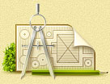
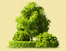

| Ландшафтное проектирование | Озеленение |  Водоемы Водоемы |
 Малые архитектурные формы Малые архитектурные формы |
 Стилевые сады Стилевые сады |
 Посадка крупномеров Посадка крупномеров |
 Зимние сады Зимние сады |
 Вертикальное озеленение Вертикальное озеленение |
 Инженерные системы Инженерные системы |
 Обслуживание садов Обслуживание садов |
Малые архитектурные формы
Одно из главных ролей в придании саду и постройкам законченного вида принадлежит малым архитектурным формам — разнообразным беседкам, статуям, перголам, садовым трельяжам, гротам и иным романтическим элементам. МАФ призваны создать некий акцент на том или ином месте участка, подчеркнуть особенность одного из растений, придать немного шарма и организовать пространство.
Для выбора наиболее подходящего варианта МАФ нужно сначала как следует познакомиться с хозяином сада — ведь малые архитектурные формы должны отражать его мировоззрение, характер. И уже после этого из множества вариантов выбрать наиболее подходящий.


 Примеры работ
Примеры работПерголы и арки — похожие между собой сооружения. Они представляют собой конструкции, которые вытягиваются вверх и слегка выгибаются. Их можно описать и как беседки, только в этом случае крыша будет отсутствовать. Перголы появились сначала в качестве опор для виноградных лоз. И только по прошествии некоторого времени стали применяться при декорировании садов, участков и парков. По классическим канонам перголы принято изготавливать из металла — это поможет устранить хлопоты по замене этих элементов в течение длительного периода времени. Также весьма распространенными являются и деревянные арки, которые будут уместны в садах, спроектированных в стиле кантри. Обычно арки ассоциируются у людей со входом. Поэтому они используются на участке для того, чтобы обозначить переход из одной зоны в другую.
Фонтаны, скульптуры и вазоны — это небольшие сооружения, главная задача которых — установить акцент на участке, притянуть. Поэтому данные элементы выставляются напоказ. Но для того, чтобы выставить фигуры на всеобщее обозрение, необходимо удостовериться, что они выполнены без изъянов.
Располагая на своем участке малые архитектурные формы, следует помнить о гармонии, не нужно увлекаться обилием разнообразных элементов декора и смешением самых разных стилей. Лучшее, как известно, враг хорошего. Поэтому постарайтесь продумать все так, чтобы о Вас и Вашем саде у окружающих сложились только положительные впечатления.
 Цены на услуги и материалы
Цены на услуги и материалы{kind=link}
{kind=link}
{kind=link}
{kind=link}
{kind=link}
{kind=link}
{kind=link}
{kind=link}